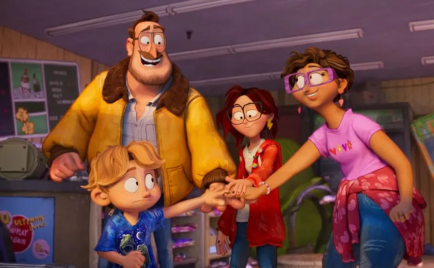
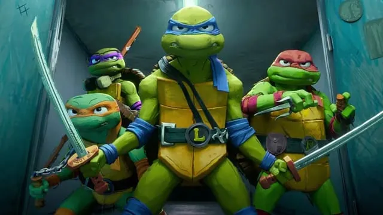
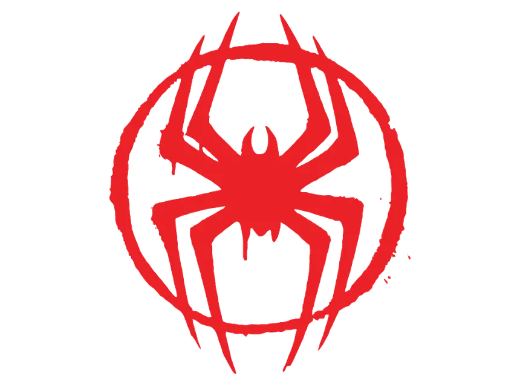

Spider-Man: Across The Spider-Verse is a very well regarded film, not only for its impressive writing and story telling, but for how it changed and influenced the animation industry. Sony Picture Aniamtions is an animation studio owned by Sony and one that is known for producing good animated films such as: Open Season, Cloudy with a Chance of Meatballs, Hotel Transylvania and many more. All of which are good and entertaining films were pretty generic and standard in terms of animation and design. This changed with Spider-Man: Into the Spider-Verse in 2018, the design and asthetic of the film was very different from that of previous animated movies. It felt like a comic book, it had hand drawn asthetics and will still clearing a 3D aniamted film the design of the film looked so different from previous movies and it fit the superhero asthetic so well that Sony had a huge success. Following this success in 2021 Sony Picture Animations relased another film called The Mitchells Vs. The Machines. This movie also combined these 2D, comic-book hand drawn asthetics that Spider-Man: Into the Spider-Verse had. This movie was recieved also well and even won Oustanding Achhievement in Animated Film from the SCAD Film Festival in 2021. This asthetic that Into the Spider-Verse had was proving to be a hit and something people wanted, and Across The Spider-Verse is no different.
Spider-Man: Across the Spider-Verse built off of what was establish and created with Spider-Man: Into the Spider-Verse and ran with it. This movie features even more crazy animation technics and sytle choices, the editing the opposing styles it all culminatives into one film that changed the standard idea of a animated film. This movie features so many different Spider-People from different dimensions and because of this it allowed the animator to have fun with different styles and asthetic, because now they didnt all have to be cohesive. It made narrative sense for the characters to be draw, animated, and designed differently. This mixture of 2D elements and 3D elements as well as differently animated and designed characters which sound like it would be jarring and hard to look at was done so well that it created a harmony in the film. Mixing hand drawn or comic book style technics into a 3D animated film has proven to be successful and something that other films have adapted.
As mentioned before The Mitchells versus the Machines was clearly influenced by the Into the Spider-Verse athetic but there are other films as well. The newest Puss in Boots film, Puss in Boots: The Last Wish, which came out in 2022 by DreamWorks, has some clear influences from Spider-Man, from the painting like design on the fur and the animation style in general with its comic-book style speed lines and fighting animations. The Bad Guys which also came out in 2022, also has design choices that seem to have been inspired by Into the Spider-Verse. Most recently in 2023 New Teenage Mutant Ninja Turtles: Mutant Mayhem, is the most like the Spider-Verse films, both being based of comics it makes sense that this asthetic would work the best for it. Now its important to note I am not saying this movies stole from Spider-Verse or that Spider-Verse is the only animated movie to do this style and is perfect. What I am saying however is there is clearly a tend in the industry following the Spider-Verse films with the design of hand drawn, comic-book like design, and as someone who enjoys this design and thinks its time for 3D animated films to look different from the generic Pixar releastic renderings and a fan of classic 2D animation I am all for this trend in the industry.
  